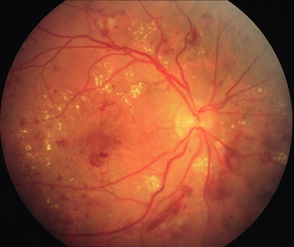

Retinal Fundus Image
Click to upload or drag & drop
PNG, JPG, TIFF, WEBP or BMP

images.jpeg (Clinical Case)
Select Case to Analyze:
Pre-computed XAI
Model Hyperparameters
MSAG Model Weight (Primary CNN)
0.70
0.0 (BiomedCLIP only)
0.7 (Default)
1.0 (MSAG only)
BiomedCLIP Softmax Temperature
2.0
Backend Connection Notice
Retinal Fundus Loaded
images.jpeg is ready. Click "Run Diagnostic Analysis" below to view the 4-panel LayerCAM report and clinical evaluation.
Executing Multi-Modal Neural Pipeline...
Extracting multi-scale spatial features, zero-shot prompts & LayerCAM heatmaps
Connecting to backend inference engine...
Primary Diagnosis
Risk Stratification
Visual Diagnostic & Explainability Report
Severity Probability Breakdown
Clinical Findings & Recommendations
Pathological Findings
Referral Guideline
Follow-up Schedule
Doctor's Action Checklist
Clinical Disclaimer: This application is an investigational AI screening tool. It is not an automated medical device and does not substitute certified ophthalmological examination.